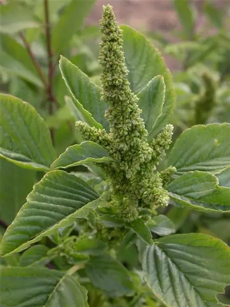

Ayuntamiento de Senés
JARDIN BOTANICO DE ESPECIES AUTOCTONAS DE SENES

Amaranthus retroflexus

El bledo (Amaranthus retroflexus) es una planta herbácea anual muy común en el ecosistema mediterráneo, especialmente en terrenos removidos, huertos y campos cultivados. Se caracteriza por su crecimiento rápido y su gran capacidad de adaptación.
Presenta tallos erectos, robustos y ramificados, que pueden alcanzar hasta un metro de altura. Sus hojas son anchas, ovaladas y de color verde intenso. Produce inflorescencias densas en forma de espigas, de color verde o rojizo, donde se desarrollan numerosas semillas.
El bledo se distribuye ampliamente por regiones templadas y cálidas del mundo. Crece de forma espontánea en terrenos alterados, huertos, bordes de caminos y zonas agrícolas.
En el entorno de Senés, es una planta frecuente en campos cultivados y suelos removidos, formando parte de la vegetación ruderal.
El bledo es una planta comestible rica en nutrientes, especialmente en vitaminas y minerales. Sus hojas jóvenes pueden consumirse como verdura, siendo valoradas por su aporte nutricional.
También se le atribuyen propiedades digestivas y depurativas dentro de la medicina tradicional.
El bledo simboliza la resistencia y la abundancia, debido a su capacidad para crecer en casi cualquier tipo de suelo.
En el lenguaje popular, la expresión “importar un bledo” refleja su carácter común y su abundancia en el entorno.
En Senés, el bledo ha sido conocido principalmente como planta silvestre comestible en tiempo de escasez de comida.
Se decía que tenía propiedades, era buena para la diarrea, para mantener la memoria, cuidados de la piel y y entre otras cosas aumentar las defensas.
El bledo florece principalmente en verano, produciendo espigas densas donde se desarrollan sus semillas.
El bledo pertenece al género Amaranthus, que incluye especies cultivadas como pseudocereales. Su capacidad de producción de semillas es muy elevada.
Es una de las plantas más resistentes y adaptables del entorno agrícola.